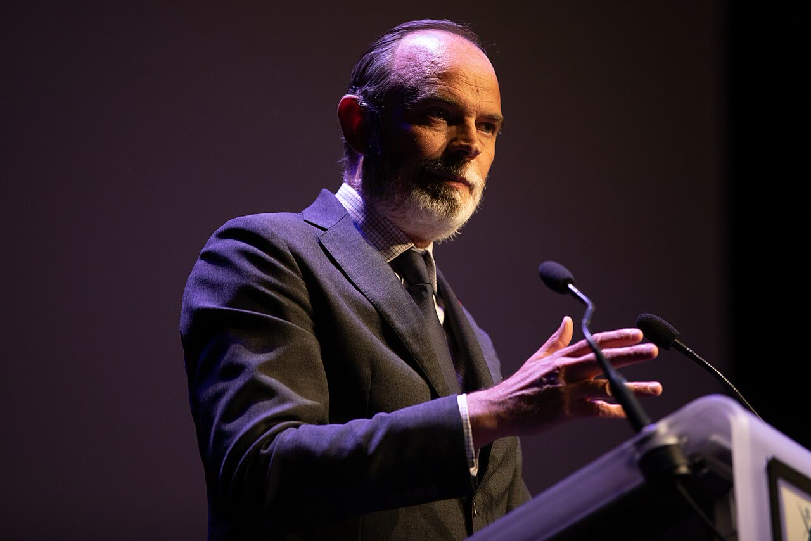

Francia, Édouard Philippe testimone assistito nell'inchiesta del Havre: non è indagato
Oggi contro Philippe non c'è un'accusa, e va detto chiaro a pochi mesi dal voto. Resta una domanda politica: un contratto da 2 milioni con un solo concorrente non è un reato, ma non è il mercato che un liberale vuole.
Redazione Contrappunto · aggiornato il 30.10.2026

.jpg){kind=link}
Édouard Philippe è stato primo ministro di Emmanuel Macron dal 2017 al 2020, è sindaco del Havre, in Normandia, ed è il candidato del partito di centrodestra Horizons alle presidenziali francesi del 2027; nei sondaggi è dietro i candidati dell'estrema destra e della sinistra radicale. Dal maggio 2026 due giudici istruttori finanziari di Parigi indagano su un contratto del luglio 2020 della comunità urbana del Havre, che Philippe presiedeva, per gestire la Cité numérique, uno spazio per l'innovazione digitale. L'inchiesta nasce dall'esposto di un'ex dirigente della comunità urbana.
Vedi di più: 4 parole spiegate, cosa si racconta
Cosa si raccontaIn Francia la notizia è data con lo status esatto: Le Figaro e la radio pubblica ICI, con l'AFP, scrivono che Philippe è testimone assistito, uno status meno incriminante di una messa sotto accusa, e che la prospettiva di un processo si allontana. Le Monde titola nello stesso modo. Nei titoli in inglese il tono cambia: per France 24 Philippe è stato interrogato in un caso di peculato. [Le Figaro] [ICI (Radio France)] [Le Monde] [France 24]
- Témoin assisté (testimone assistito)
- Nel codice di procedura penale francese (articoli 113-1 e seguenti) è chi viene sentito dal giudice con un avvocato perché è chiamato in causa, per esempio da un esposto, senza essere messo sotto accusa. Non è parte del processo e non può subire misure come il controllo giudiziario o la custodia cautelare.
- Mise en examen
- La messa sotto accusa formale nell'istruttoria francese: richiede indizi più forti di quelli che bastano per il testimone assistito, e chi la subisce diventa parte del procedimento. Non equivale a una condanna.
- Giudice istruttore
- In Francia, per le inchieste più complesse, le indagini le conduce un giudice indipendente, il juge d'instruction, e non solo la procura. Qui il fascicolo era partito dalla procura finanziaria nazionale (PNF).
- Lanceuse d'alerte
- Segnalatrice: chi denuncia illeciti nel proprio ente e per questo gode di tutele di legge. La dirigente che ha presentato l'esposto ha ottenuto questo status nel gennaio 2025.
- Giovedì 29 ottobre l'ex primo ministro francese Édouard Philippe, candidato all'Eliseo nel 2027, è stato sentito tutto il giorno da due giudici istruttori di Parigi in un'inchiesta su presunto peculato, favoritismo e molestie sul lavoro al Havre.
- Ne è uscito come «témoin assisté», testimone assistito: uno status meno grave della «mise en examen», la messa sotto accusa formale, che può cambiare se emergono elementi nuovi.
Le Figaro e la radio pubblica ICI, con l'AFP, usano le parole giuste: testimone assistito, meno di una messa sotto accusa. Le Monde titola allo stesso modo, ma il suo sito blocca il nostro lettore. France 24 titola in inglese che Philippe è stato interrogato in un caso di peculato, e suona peggio di quello che è. In Italia non ne ha scritto nessuno. Oggi contro Philippe non c'è un'accusa: c'è un'inchiesta nata da un esposto, e i giudici, dopo un giorno di domande, hanno scelto di non metterlo sotto accusa. Resta la domanda politica: un contratto da 2 milioni con un solo concorrente non è un reato, ma non è il mercato che un liberale vuole. [1] [5] [3] [6]
La verifica punto per punto3 passaggi, 8 fonti
Qui sotto ogni cosa scritta sopra, una per una, con le fonti. Confermato: lo dice un documento originale o più fonti lette. Plausibile: lo riportano fonti serie, ma non abbiamo letto l'originale. Discordante: le fonti danno numeri diversi, e diciamo quali. Ipotesi e Opinione sono il nostro ragionamento, separato dai fatti.
Lo status di oggi
Giovedì 29 ottobre Édouard Philippe è stato sentito tutto il giorno da due giudici istruttori finanziari di Parigi, che lo avevano convocato come testimone assistito, ed è rimasto testimone assistito: non è stato messo sotto accusa. L'inchiesta riguarda presunti peculato, favoritismo e molestie sul lavoro nella comunità urbana del Havre. Il suo avvocato, Emmanuel Marsigny, ha detto all'AFP che Philippe «se félicite de cette décision favorable qui confirme qu'il n'y a rien à lui reprocher dans cette affaire» (si rallegra di questa decisione favorevole, che conferma che non c'è nulla da rimproverargli). L'avvocato della segnalatrice, Jérôme Karsenti, ha risposto: «Nous nous réjouissons que l'instruction suive son cours» (siamo contenti che l'istruttoria vada avanti). Philippe ha respinto tutte le accuse.
Cosa c'è nell'inchiesta
Al centro c'è una convenzione pluriennale firmata nel luglio 2020 da Philippe, appena diventato presidente della comunità urbana Le Havre Seine Métropole, con l'associazione LH French Tech per animare la Cité numérique. L'associazione, nata lo stesso mese e presieduta da una vicesindaca, era l'unica candidata al bando e doveva ricevere 2,154 milioni di euro. L'esposto di un'ex vicedirettrice generale della comunità urbana ha portato nel 2023 a un'indagine preliminare della procura finanziaria, con perquisizioni; una seconda denuncia del giugno 2025, con costituzione di parte civile, ha portato nel maggio 2026 ai giudici istruttori. Secondo Le Monde, il 20 ottobre si è costituita parte civile anche l'associazione anticorruzione Anticor.
Il nostro punto
Garantismo vuol dire usare la parola giusta: testimone assistito non è indagato, e chi lo presenta come accusato sbaglia. La domanda che resta è politica: un bando con un solo concorrente, vinto da un'associazione nata il mese stesso, è il contrario della concorrenza, e un candidato liberale dovrebbe spiegarlo agli elettori senza aspettare i giudici.
Fonti8, tutte con il link
- Accusations de détournement de fonds publics : Édouard Philippe placé sous le statut de témoin assisté (Le Figaro) · consultata il 30.10.2026
- Présidentielle 2027 : le reflux d'Édouard Philippe réveille le débat sur la primaire à droite (Le Figaro) · consultata il 30.10.2026
- Edouard Philippe placé sous le statut de témoin assisté dans une enquête ouverte notamment pour détournement de fonds publics (Le Monde) · consultata il 30.10.2026
- Anticor se constitue partie civile dans l'enquête sur Edouard Philippe (Le Monde) · consultata il 30.10.2026
- Soupçons de détournement de fonds publics : Édouard Philippe placé sous le statut de témoin assisté (ICI (Radio France)) · consultata il 30.10.2026
- French presidential hopeful Édouard Philippe quizzed in embezzlement case (France 24) · consultata il 30.10.2026
- Nathan Joubioux, French presidential candidate Édouard Philippe designated 'assisted witness' in embezzlement case (Euronews) · consultata il 30.10.2026
- Le mis en examen et le témoin assisté (Cabinet ACI (studio legale, Parigi)) · consultata il 30.10.2026